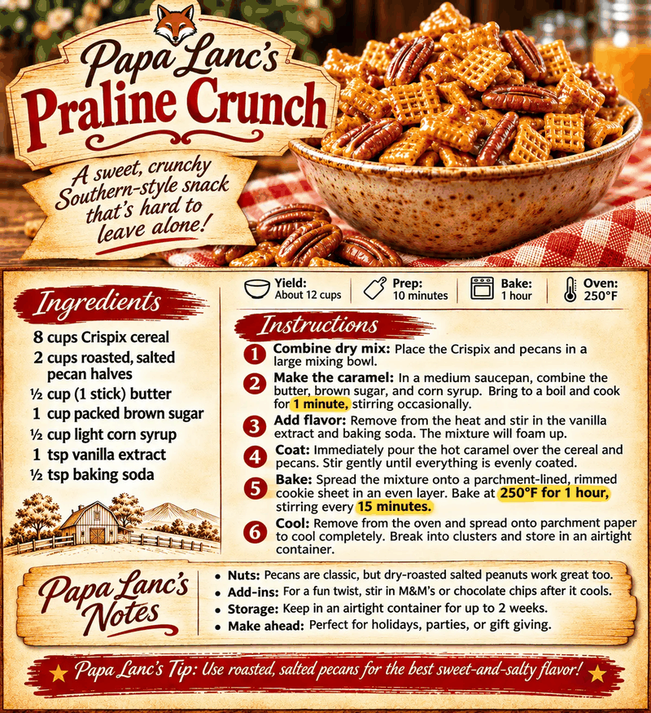

← Back to Cookbook
Papa Lanc's Praline Crunch
A sweet, crunchy Southern-style snack that's hard to leave alone!
Yield: About 12 cups • Prep: 10 minutes • Bake: 1 hour • Oven: 250°F
Ingredients
- 8 cups Crispix cereal
- 2 cups roasted, salted pecan halves
- ½ cup (1 stick) butter
- 1 cup packed brown sugar
- ½ cup light corn syrup
- 1 tsp vanilla extract
- ½ tsp baking soda
Instructions
- Combine dry mix: Place the Crispix and pecans in a large mixing bowl.
- Make the caramel: In a medium saucepan, combine the butter, brown sugar, and corn syrup. Bring to a boil and cook for 1 minute, stirring occasionally.
- Add flavor: Remove from the heat and stir in the vanilla extract and baking soda. The mixture will foam up.
- Coat: Immediately pour the hot caramel over the cereal and pecans. Stir gently until everything is evenly coated.
- Bake: Spread the mixture onto a parchment-lined, rimmed cookie sheet in an even layer. Bake at 250°F for 1 hour, stirring every 15 minutes.
- Cool: Remove from the oven and spread onto parchment paper to cool completely. Break into clusters and store in an airtight container.
Papa Lanc's Notes:
- Nuts: Pecans are classic, but dry-roasted salted peanuts work great too.
- Add-ins: For a fun twist, stir in M&M's or chocolate chips after it cools.
- Storage: Keep in an airtight container for up to 2 weeks.
- Make ahead: Perfect for holidays, parties, or gift giving.
Papa Lanc's Tip: Use roasted, salted pecans for the best sweet-and-salty flavor!


WELCOME